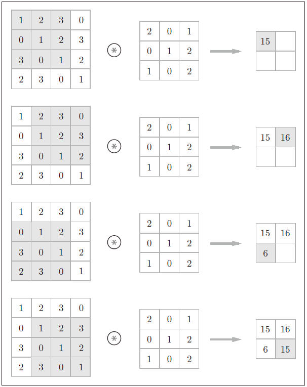

卷积神经网络（Convolutional Neural Networks，CNNs）一般是由卷积层、汇聚层和全连接层组成的神经网络。
下面以二维卷积神经网络为例，介绍其中最为重要的卷积层：
卷积（Convolution）层
在卷积层，使用滤波器（filter）/核（kernel）对输入数据进行卷积运算。卷积层的输入/输出数据又被称为输入/输出特征图（feature map）。设输入数据大小为($H$, $W$)，滤波器大小为($FH$, $FW$)。一般来说，$H$>$FH$，$W$>$FW$，$H$=$W$，$FH$=$FW$。下图是卷积运算的一个示例，与滤波器相同大小的窗口在输入数据上进行滑动，在每个窗口位置上，输入数据中被圈出的元素与滤波器中对应的元素相乘后再相加，作为输出特征图中的一个值。

窗口每次滑动的长度称为步幅（stride）。在卷积运算中，经常需要在输入数据的周围填入固定的数据，即填充（padding），以调整特征图的尺寸。设步幅为$S$，填充为$P$，则输出大小($OH$, $OW$)按如下式子进行计算
参考资料
邱锡鹏，飞桨教材编写组. 神经网络与深度学习[M]. 北京：机械工业出版社, 2020.04.
（日）斋藤康毅著；陆宇杰译. 深度学习入门 基于Python的理论与实现[M]. 北京：人民邮电出版社, 2018.07.